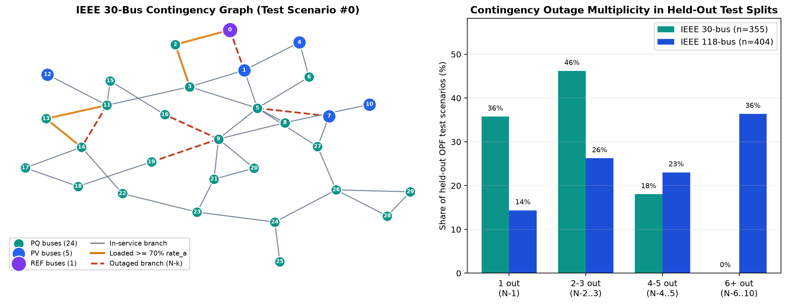
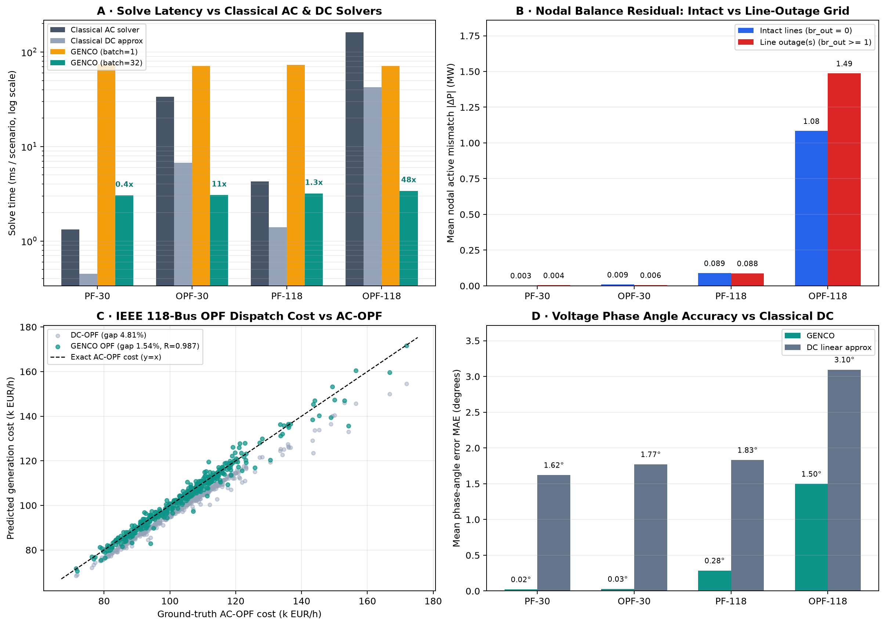

Module 4 · Graph & physics-aware grid foundation models
Fast ≠ certified feasible: GridFM (GENCO) on AC power flow and optimal dispatch
Power networks obey Kirchhoff's laws across buses, generators and lines whose topology changes under every N-1 or N-k outage.
We evaluate four official GENCO Base checkpoints (GNS_heterogeneous, 20.07 M parameters, Apache-2.0) on held-out
IEEE 30-bus and IEEE 118-bus test contingencies across both AC Power Flow (PF) and AC Optimal Power Flow (AC-OPF).
- Architecture
- GENCO Base (
GNS_heterogeneous, 12 layers, 8 heads, hidden 48) - Benchmarks
- IEEE 30-bus & 118-bus · PF + AC-OPF (
gridfm-datakit) - Test splits
- 355–404 held-out contingency scenarios each (zero train overlap)
- Setup
pip install -r requirements-extras/gridfm.txt
1 · Heterogeneous grid graphs & contingency regimes
gridfm-graphkit represents each grid scenario as a heterogeneous graph with two node types (bus with PQ/PV/REF flags and demand; gen with quadratic cost curves and output bounds) connected by bidirectional bus–connects–bus admittance branches carrying thermal ratings (rate_a) and outage flags (br_status). At each of 12 message-passing layers, GENCO computes differentiable AC branch flows and feeds nodal power-balance residuals (ΔP, ΔQ) back into bus embeddings.

gridfm-datakit held-out test splits in partitions 0..14 are true contingency ensembles: 404 single outages (N-1) for both PF-30 and PF-118, 355 N-1..N-5 outages for OPF-30, and 404 N-1..N-10 outages for OPF-118.
2 · Electrical & economic accuracy vs. linear DC
Conventional grid screening relies on linear DC approximations that assume flat voltage magnitudes (1.0 p.u.) and ignore reactive power and losses. Across every benchmark, GENCO predicts full nonlinear AC voltages, angles, reactive dispatch and generator cost with far lower error than the DC approximation stored in gridfm-datakit:
| Benchmark | N test | Vm MAE (pu) | DC Vm MAE (pu) | Va MAE (deg) | DC Va MAE (deg) | OPF |ΔC| (%) | DC |ΔC| (%) | Cost R |
|---|---|---|---|---|---|---|---|---|
| PF · IEEE 30-bus | 404 | 0.0001 | 0.0317 | 0.022° | 1.621° | – | – | – |
| OPF · IEEE 30-bus | 355 | 0.0018 | 0.0290 | 0.028° | 1.771° | 0.144% | 8.141% | 0.9998 |
| PF · IEEE 118-bus | 404 | 0.0001 | 0.0343 | 0.285° | 1.831° | – | – | – |
| OPF · IEEE 118-bus | 404 | 0.0110 | 0.0337 | 1.497° | 3.095° | 1.537% | 4.812% | 0.9872 |
3 · Physics residuals & hard vs. soft OPF bounds
Before trusting any physics metric, we verified unit and transform alignment directly on ground-truth AC solutions: mean nodal active power mismatch is ≤ 0.0027 MW max across all four cases. Evaluating GENCO predictions reveals a clear structural distinction between architecturally bounded quantities and soft learned physics:
| Benchmark | Mean |ΔP| (MW) | P95 |ΔP| (MW) | Max |ΔP| (MW) | Mean |ΔQ| (Mvar) | N-1 |ΔP| (MW) | Multi N-k |ΔP| (MW) | Vm / Pg / θ Viol (%) | Qg / Thermal Viol (%) |
|---|---|---|---|---|---|---|---|---|
| PF · IEEE 30-bus | 0.0040 | 0.0131 | 0.050 | 0.0025 | 0.0040 | – | – | – |
| OPF · IEEE 30-bus | 0.0061 | 0.0206 | 0.368 | 0.0063 | 0.0032 | 0.0078 | 0.0 / 0.0 / 0.0 | 0.20 / 0.55 |
| PF · IEEE 118-bus | 0.0883 | 0.2817 | 2.016 | 0.0101 | 0.0883 | – | – | – |
| OPF · IEEE 118-bus | 1.4738 | 4.6520 | 204.912 | 0.2833 | 1.2053 | 1.5188 | 0.0 / 0.0 / 0.0 | 0.07 / 0.84 |
bound_with_sigmoid enforces voltage (Vm) and active generator (Pg) box limits by construction (0.00% violations, compared with 0.00% across all five checks on AC-OPF ground truth). However, reactive limits (Qg: 0.07–0.20%), line thermal ratings (rate_a: 0.55–0.84%), and Kirchhoff balance remain soft: on IEEE 118-bus OPF, average |ΔP| rises to 1.47 MW and worst-case single-bus mismatch hits 204.9 MW under heavy multi-line outages. Always keep an AC solver or feasibility verifier in the loop before committing switching or dispatch decisions.

4 · Batch=1 vs. batch=32 speedup, VRAM & energy
All four checkpoints share the same compact footprint (20.07 M parameters, float32, 80.4–80.5 MB on disk) and comfortably fit inside a GPU <= 4 GB budget (0.128 GB VRAM on 30-bus, 0.270 GB on 118-bus). Latency depends critically on batching because 12 sparse message-passing layers incur fixed CUDA kernel-launch overhead at batch=1 (~71–74 ms regardless of grid size):
| Benchmark | Classical AC (ms) | Classical DC (ms) | GENCO b=1 (ms) | GENCO b=32 (ms) | Speedup vs AC (b=32) | Peak VRAM (GB) | GPU W (b=32) | mJ / solve (b=32) |
|---|---|---|---|---|---|---|---|---|
| PF · IEEE 30-bus | 1.32 | 0.45 | 74.17 | 3.043 | 0.4× | 0.128 | 54.5 | 166.37 |
| OPF · IEEE 30-bus | 33.57 | 6.75 | 71.48 | 3.069 | 10.9× | 0.128 | 55.8 | 171.85 |
| PF · IEEE 118-bus | 4.26 | 1.40 | 72.98 | 3.186 | 1.3× | 0.270 | 112.1 | 358.99 |
| OPF · IEEE 118-bus | 161.76 | 42.44 | 70.98 | 3.400 | 47.6× | 0.270 | 107.6 | 366.86 |
Batching 32 contingency scenarios cuts GPU energy per solve nearly 10× (from 3.16–3.39 J/solve at batch=1 down to 0.36–0.37 J/solve at batch=32 on 118-bus). End-to-end, executing all four benchmarks in the cached notebook consumed 0.783 Wh of measured GPU electricity (80.1 s profiled, NVML 50 ms) or 3.868 Wh whole-notebook system energy (117.6 s, CodeCarbon offline):
| Telemetry Scope | Duration (s) | GPU (Wh) | CPU + RAM (Wh, modeled) | Total (Wh) | CO₂ CH 30 g/kWh (mg) | CO₂ EU 230 g/kWh (mg) | CO₂ US 380 g/kWh (mg) |
|---|---|---|---|---|---|---|---|
| Profiled steps (GPU only, NVML 50 ms) | 80.1 | 0.7832 | – | 0.7832 | 23.50 | 180.14 | 297.62 |
| Whole notebook (CodeCarbon offline) | 117.6 | 0.9261 | 2.9416 | 3.8677 | 116.03 | 889.57 | 1,469.72 |
5 · What this means for grid modelling
| Use case | Fit | Recommended workflow |
|---|---|---|
| Single tiny PF solves (<= 50 buses) | Not needed | Classical CPU Newton-Raphson solves in ~1 ms without GPU launch overhead or residual error. |
| N-1 / N-k contingency screening (100+ scenarios) | Strong | Batch 32+ contingencies through GENCO OPF (~3.4 ms & 0.37 J/solve on 118-bus) to rank critical outages before running exact AC-OPF on top candidates. |
| AC-OPF warm starting | Strong | Predict near-optimal Vm, Va, Pg inside hard box bounds (~1.5% cost gap) to initialize interior-point solvers (IPOPT / PandaPower) faster than flat-start or DC-OPF. |
| Zero-tolerance dispatch sign-off | Do not use alone | Soft power-balance residuals can spike (204.9 MW max observed on 118-bus); always certify final schedules with a full AC power-flow/OPF check. |